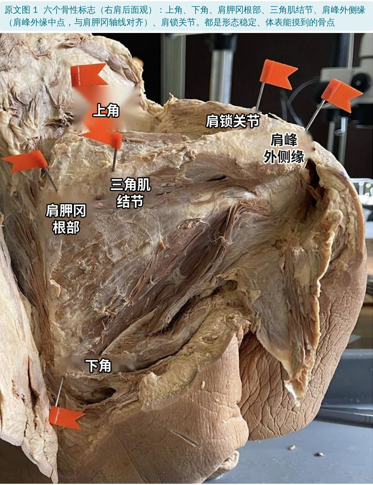
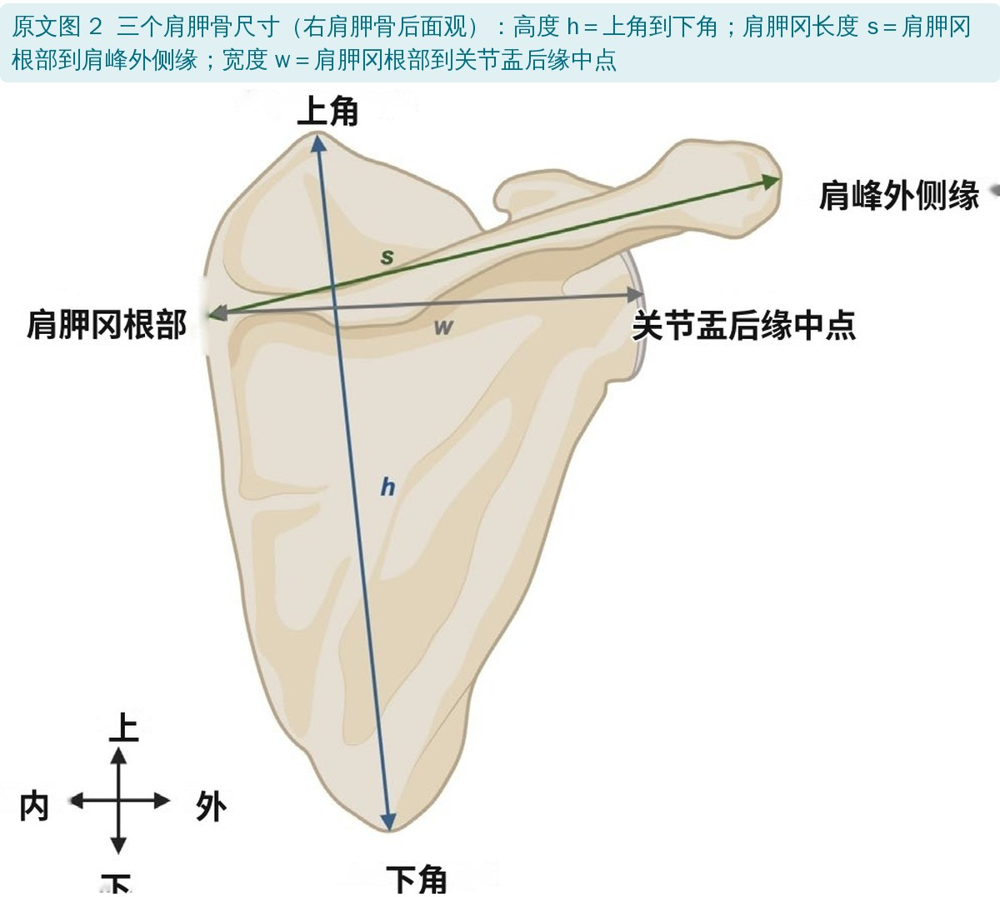
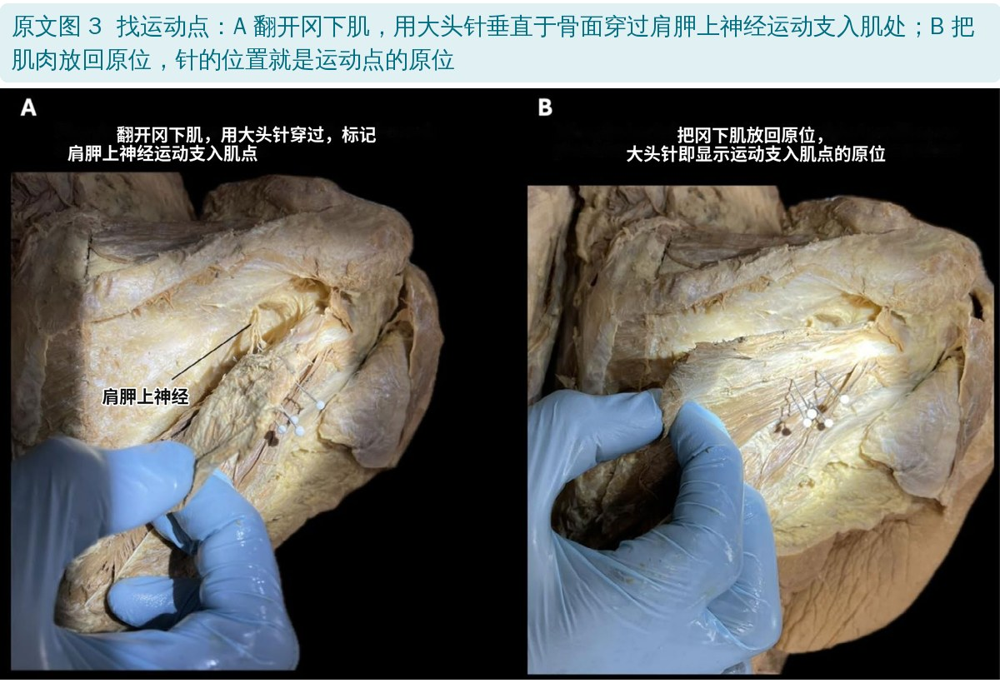
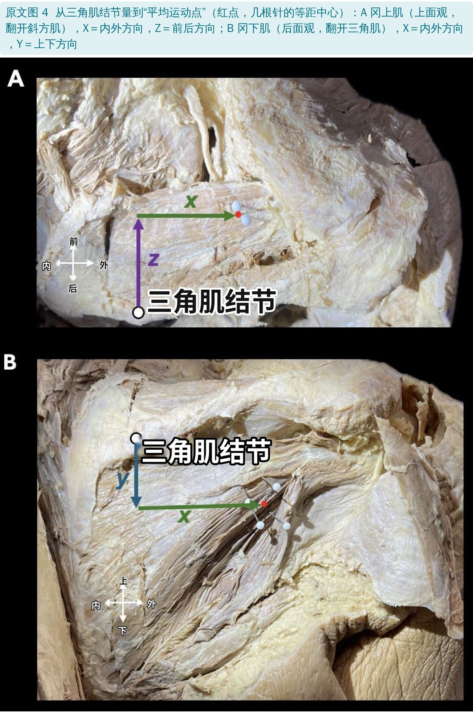
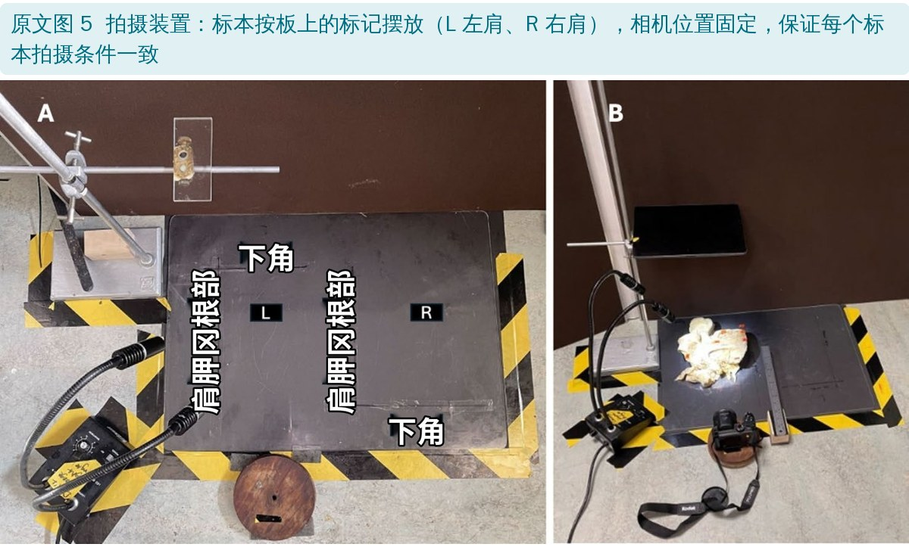
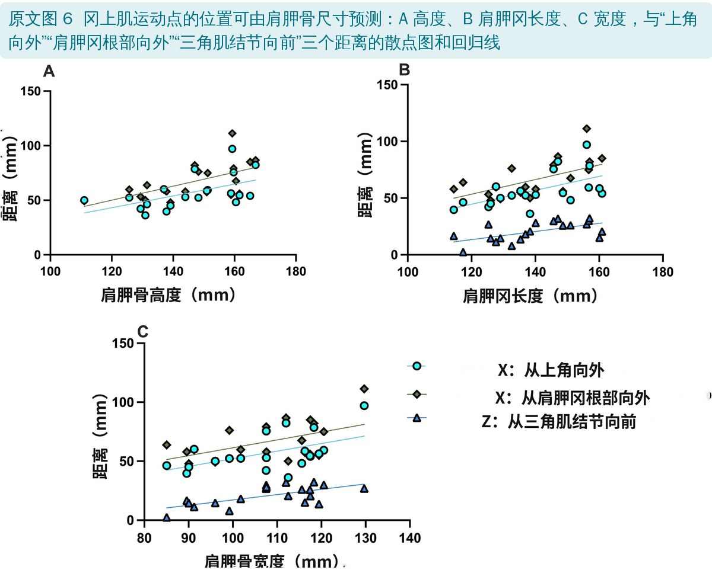
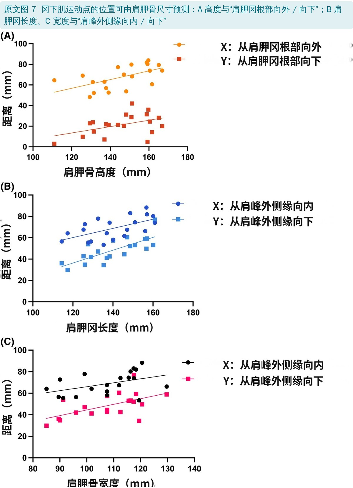
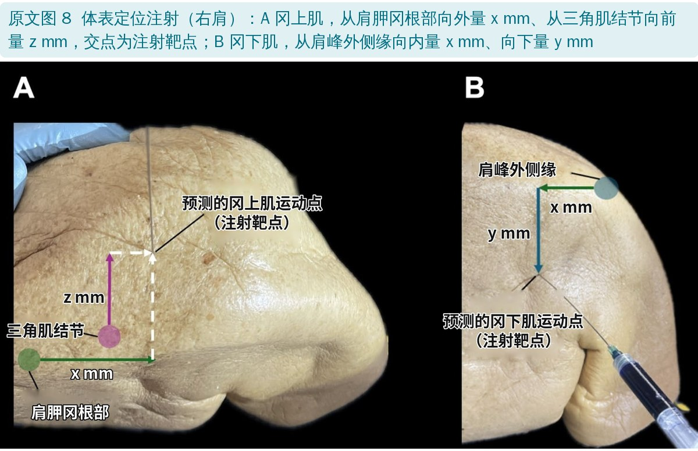
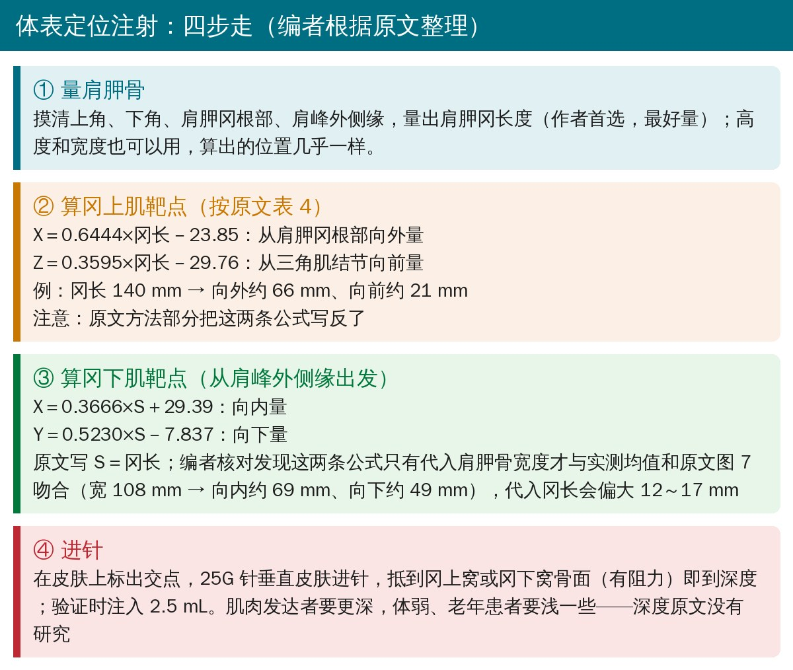
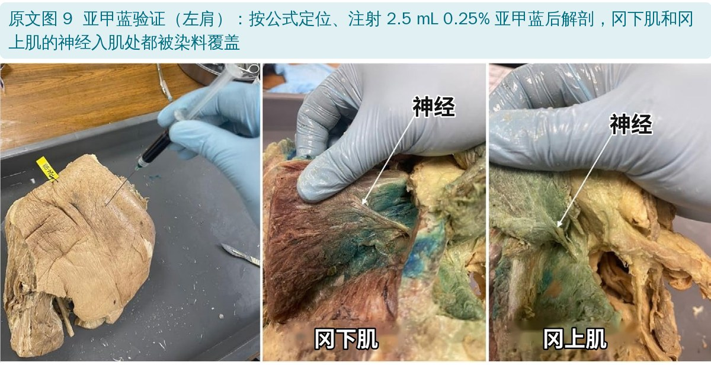

🔖原文信息（编者中文重排）
📚 文献信息
▪ Duru DO, Lee DKR, Jarvis GE, Kang N, Chaudhury S, Brassett C. A Novel Patient-Specific Landmark-Guided Approach for Intramuscular Botulinum Neurotoxin Injections Into the Rotator Cuff: A Cadaveric Study. Clinical Anatomy. 2026;39:912-922. doi:10.1002/ca.70068
▪ 作者单位：英国剑桥大学人体解剖中心、桑德兰大学医学院、剑桥大学医院创伤骨科
▪ 文章类型：尸体解剖研究（20 侧肩建模 + 4 侧肩染料验证），获英国临床解剖学会 2025 夏季学术会议最佳口头报告奖
肩痛很常见，原文引用的数据是每年约一半人受其困扰，肌筋膜疼痛是常见原因之一：肌肉里有高度敏感的触发点和紧张、压痛的条索。在肩部，触发点常出现在肩袖：肌筋膜性肩痛中 60%～68% 累及冈上肌，78% 累及冈下肌。这两块肌肉都由肩胛上神经支配。
肉毒毒素能阻断神经肌肉接头释放乙酰胆碱，让肌肉长时间放松，从而缓解肌筋膜疼痛；而且打得越靠近运动点，效果越好。这里的运动点指神经分支进入肌腹的位置，可以看作下面运动终板区的“地标”；电生理研究也发现触发点多聚集在运动点附近。
难点是：每个人的运动点位置差别很大。现在多靠超声或肌电图引导，但设备和培训不是处处都有；按压痛点“盲打”又长期效果有限。作者想找一种不用影像、按每个人肩胛骨大小来算的体表定位方法。
• 标本：10 对防腐固定的尸体肩（20 侧），男女各 5 人，平均年龄 80.8 岁
• 标志点：解剖出 6 个体表能摸到的骨性标志——上角、下角、肩胛冈根部、三角肌结节、肩峰外侧缘、肩锁关节（图 1）
• 肩胛骨尺寸：高度、肩胛冈长度、宽度（图 2）
• 运动点：翻开冈上肌、冈下肌，在肩胛上神经运动支入肌处垂直骨面插大头针，再把肌肉放回原位（图 3）；取几根针的等距中心作为“平均运动点”，也就是一针注射的靶点
• 测量：在固定装置上统一拍照（图 5），用 ImageJ 量出各标志到平均运动点在两个方向上的距离（图 4），再用数显卡尺复核
• 统计：简单线性回归，看这些距离能不能用肩胛骨尺寸预测，得出个体化公式
• 验证：另取 4 侧带皮肤的固定肩，按公式在体表定位，25G 针垂直进针抵到骨面，注入 2.5 mL 0.25% 亚甲蓝，再解剖看染料有没有盖住运动点

🔖原文图 1：六个骨性标志（图中英文已改为中文）

🔖原文图 2：肩胛骨的三个尺寸

🔖原文图 3：用大头针标出运动点

🔖原文图 4：从三角肌结节量到平均运动点

🔖原文图 5：统一的拍摄装置
| 尺寸 | 全部标本（范围） | 左侧 | 右侧 |
|---|---|---|---|
| 高度 | 145.8 ± 15.2（111.1～166.9） | 147.6 ± 15.6 | 144.0 ± 15.4 |
| 肩胛冈长度 | 140.3 ± 14.3（114.4～160.9） | 137.9 ± 16.3 | 142.8 ± 12.4 |
| 宽度 | 107.6 ± 12.4（85.0～129.7） | 106.6 ± 12.3 | 108.9 ± 13.1 |
原文表 1：肩胛骨尺寸（mm，均数 ± 标准差）。左右侧没有显著差异
• 冈上肌平均有 2.1 个运动点（2～3 个），冈下肌平均 3.6 个（2～5 个）
• 各标志到运动点的距离个体差异很大，同一个人左右两侧也可能不同，例如肩胛冈根部向外到冈上肌运动点：47.9～111.3 mm
| 肌肉 | 从哪个标志量 | 方向 | 距离（mm） |
|---|---|---|---|
| 冈上肌 | 肩胛冈根部 | 向外（X） | 66.6 ± 16.2（47.9～111.3） |
| 冈上肌 | 三角肌结节 | 向前（Z） | 20.7 ± 8.5（2.5～32.3） |
| 冈上肌 | 上角 | 向外（X） | 57.1 ± 15.4（36.1～97.1） |
| 冈下肌 | 肩峰外侧缘 | 向内（X） | 68.9 ± 10.3（53.4～88.3） |
| 冈下肌 | 肩峰外侧缘 | 向下（Y） | 48.5 ± 11.3（29.9～77.0） |
| 冈下肌 | 肩胛冈根部 | 向外（X） | 67.7 ± 11.1（48.3～83.8） |
| 冈下肌 | 肩胛冈根部 | 向下（Y） | 21.4 ± 10.3（2.9～42.1） |
原文表 2、表 3 节选：各标志到平均运动点的距离（均数 ± 标准差，范围）
• 冈上肌：上角向外、肩胛冈根部向外、三角肌结节向前这三个距离，都与肩胛骨高度、冈长、宽度相关（r ≈ 0.51～0.66，p ≤ 0.021）
• 冈下肌：肩胛冈根部向外 / 向下与高度相关；肩峰外侧缘向内 / 向下与冈长或宽度相关（r ≈ 0.44～0.60，p ≤ 0.05）
• 验证：4 侧肩全部注射成功，染料完全覆盖了冈上肌和冈下肌的运动点（图 9）

🔖原文图 6：冈上肌运动点距离与肩胛骨尺寸的关系

🔖原文图 7：冈下肌运动点距离与肩胛骨尺寸的关系
作者选肩胛冈长度作为代入值（三个尺寸算出来几乎一样，冈长最好量）。冈上肌用两个起点：从肩胛冈根部向外量、从三角肌结节向前量；冈下肌只用肩峰外侧缘一个起点，向内、向下量——作者发现肩峰外侧缘在胖瘦、肌肉多少不同的标本上都更好摸。

🔖原文图 8：冈上肌（A）和冈下肌（B）的体表定位

🔖注射流程卡（编者根据原文整理，公式已按原文表 4 和图 7 核对）
| 原文方法部分写的 | 编者核对后建议 | |
|---|---|---|
| 冈上肌 X（肩胛冈根部向外） | 0.3595×冈长－29.76 | 0.6444×冈长－23.85（表 4） |
| 冈上肌 Z（三角肌结节向前） | 0.6444×冈长－23.85 | 0.3595×冈长－29.76（表 4） |
| 冈下肌 X（肩峰外侧缘向内） | 0.3666×冈长＋29.39 | 0.3666×宽度＋29.39 |
| 冈下肌 Y（肩峰外侧缘向下） | 0.5230×冈长－7.837 | 0.5230×宽度－7.837 |
四条注射公式：原文写法与编者核对结果（单位 mm）
核对方法：回归线一定经过样本均值。把原文表 1 的平均冈长 140.3 mm 代入原文写法，冈上肌“向外”只有 20.6 mm、“向前”却有 66.4 mm，正好与表 2 的实测均值（66.6、20.7 mm）对调；冈下肌两条公式代入冈长得 80.8、65.5 mm，比实测均值（68.9、48.5 mm）大 12～17 mm，代入平均宽度 107.6 mm 则得 68.8、48.4 mm，与均值和原文图 7C 的回归线吻合。

🔖原文图 9：亚甲蓝验证
• 预测力一般：r 在 0.44～0.66，也就是肩胛骨大小只能解释距离差异的约 20%～44%，剩下的个体差异公式管不了
• 样本小：建模只有 10 个人（20 侧肩），验证只有 4 侧，而且没有和压痛点盲打、超声引导做对比
• 标本不像活人：平均 80 岁、福尔马林固定，肌肉萎缩、固定后收缩、没有血流，染料扩散和活体不一样；活体的皮下脂肪、肌肉厚度也会影响体表触诊
• 2.5 mL 染料能扩散一大片：“完全覆盖”说明落点大致对，但不能说明一针打得有多准
• 只看了解剖：没有用肌电图确认运动终板，没有研究进针深度，也没有任何患者疗效数据
• 优点：选的都是体表能摸到的骨性标志，两个方向定位，公式简单，不需要设备；三角肌结节作为冈上肌注射标志以前很少被用到
• 冈上肌两条注射公式写反了：方法部分“X（肩胛冈根部向外）＝0.3595×冈长－29.76、Z（三角肌结节向前）＝0.6444×冈长－23.85”，而表 4 中 0.3595 那条是“三角肌结节向前”，0.6444 那条是“肩胛冈根部向外”。照原文写法算，平均冈长的人会向外只量约 21 mm、向前量约 66 mm，偏离很远
• 冈下肌公式的自变量对不上：表 5 把 0.3666 和 0.5230 两条标为“对冈长”，但它们只有代入宽度才经过实测均值，也和图 7C（宽度）的回归线吻合；代入冈长会偏大 12～17 mm。表 5 其他几行也有类似错位（如 C 行两条公式代入宽度得不到实测均值，反而接近“肩胛冈根部—高度”那组），整张表需要作者核对
• 摘要的 r 值范围与表 4 不符：摘要写冈上肌 r＝0.58～0.64，按表 4 的 R² 换算，三角肌结节和肩胛冈根部这几组是 0.51～0.66；冈下肌摘要写 0.46～0.60，表 5 换算为 0.44～0.60
• 冈下肌“向内”那条 p＝0.0500，正好卡在显著性界值上，作者却拿它作为推荐公式
• 小问题：图 6 图注第一句重复了两遍
• 这是尸体研究，给出的是“大概在哪儿”的解剖参考，还不能替代超声或肌电图引导；肉毒毒素注射须由有资质的医生操作
• 如果要用公式，先按上面核对后的版本：冈上肌按表 4，冈下肌用宽度代入，或直接参考表 2、表 3 的平均距离，同时等作者勘误
• 先摸准骨性标志：肩胛冈根部、三角肌结节、肩峰外侧缘是这套方法的起点，体表触诊误差会直接带到靶点上
• 深度因人而异：原文进针都是垂直皮肤抵到冈上窝或冈下窝骨面；作者提醒肌肉发达者要更深，体弱、老年患者要浅
• 对康复治疗师：冈上肌、冈下肌是肩痛触发点最常见的两块肌肉，这些距离也可以帮助理解运动点大致在哪里；但原文没有研究干针、电刺激等其他用途
欢迎关注骨科康复小黄公众号，获取更多物理治疗的专业知识！
📄参考文献：
Duru DO, Lee DKR, Jarvis GE, Kang N, Chaudhury S, Brassett C. A Novel Patient-Specific Landmark-Guided Approach for Intramuscular Botulinum Neurotoxin Injections Into the Rotator Cuff: A Cadaveric Study. Clinical Anatomy. 2026;39:912-922. doi:10.1002/ca.70068
原文以 CC BY 4.0 协议开放获取，版权归原作者所有。本文为学术交流用的中文解读：图 1～9 引自原文，图中英文已改为中文并配中文图注；流程卡为编者根据原文整理，表格为中文翻译。如有侵权请联系删除。